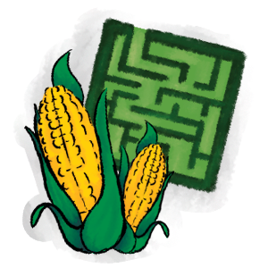

| Thing | Attributes | Nickname | Pros | Cons | Fun Fact |
|---|
| Can vary but most decide to rent a cabin or a secluded house. | "Cabin in the Woods" (2011) | Get to experience fall weather. | Statistically will get Covid or killed by a Halloween murderer. | Halloween is not the most violent holiday of the year, that award goes to New Years Day followed by Christmas. |
|---|
|  | A maze made from corn stalks. | Maíz Maze | Fun to get lost in and the feeling of accomplishment when you are free. | Cons: (noun) Short for convicts. Ex-convict could definitely be in the maze to kill you. | The slang "corn hole" is not as pleasent as you think. |
|---|
| A variety of items ranging from PSL's to pies to candles all scented or flavored like pumpkin spice. | Festive but Basic | Feeling festive in simple easy ways. | Awful if you do not like pumpkin. | “Pumpkin spice” or “Pumpkin Pie Spice” doesn't actually contain pumpkin – it's really just a blend of warming spices usually found in pumpkin pie recipes. |
|---|
| When appeared in the movie "Evil Dead" the book has a cursed skin cover and a tortured face. | Skin Book | Great for Halloween decorations. | Can rise the dead if spoken aloud. | The "Boof of the Dead" within the stories from author H. P. Lovecraft. |
|---|
| Typically a long sleeved article of clothing which provides warmth. | Ethically Comfy | Comfy and fashionable | Too warm for Florida | A cardigan worn by a man is sometimes called a mandigan. |
|---|
| Films from the "Horror" genre. | Spooky Movies | Good for getting spooked in a safe environment. | May cause nightmares | Count Orlock only blinks once in the film Nosferatu. |
|---|
| A person who either aesthetically or practically practices witchcraft. | Bitches amiright | Aesthetically pleasing | If magic is real, then hexes are possible. | The closest and most obvious possible origin is the Old English word wicce, which means “female sorceress,” and is the basic linguistic root for the modern day pagan religion, Wicca. |
|---|
| A flying small animal which use echolocation to get an idea of their surroundings. | Majestic Flying Flap-Flap | They eat 4,000 bugs a night. | Could be a vampire. | Bats can live more than 30 years and can fly at speeds of up to 60 mph. |
|---|